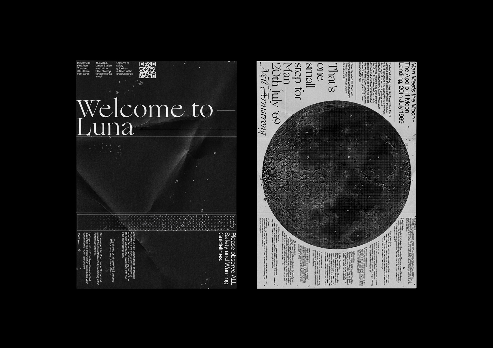

Map of the Moon ✸ Visual Identity
Set in a time where commercial travel between the Earth and the Moon is possible, visitors are invited to explore its surface within the bounds of the Moon Lander Station. ‘Map of the Moon’ is an educational poster and brochure offering users a means of guidance whilst interacting with Luna.
As this project begs an educational and informative need, a typographic approach was adapted using letter forms as a means to create shapes and design inspired by the work of Joseph Lebus. As such, final outcomes are both powerful in their appearance and content.
The audience encompasses both boys and girls aged between 16-25 who are predominantly students. To address this, the design style is neutral in its tone and is applied across a number of digital spaces such as social media
The Brochure-Poster is a massed produced printed outcome that works in conjunction with the website offering a more interactive means of exploring the moon whether it be on Earth or whilst on the moon itself in a manner similar to Google Maps.
View the Digital Outcome here
View Figma Prototype here
Outcomes: Print, Web, Motion
Year: 2020
Lecturer: Warren Taylor
